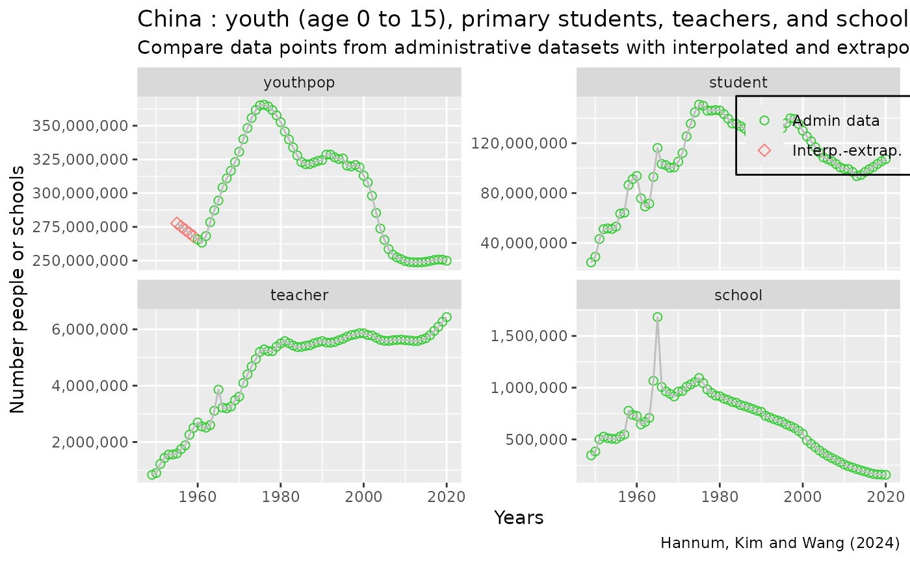
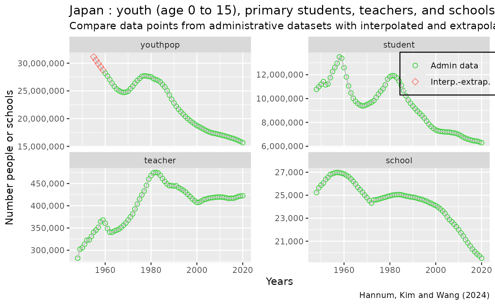
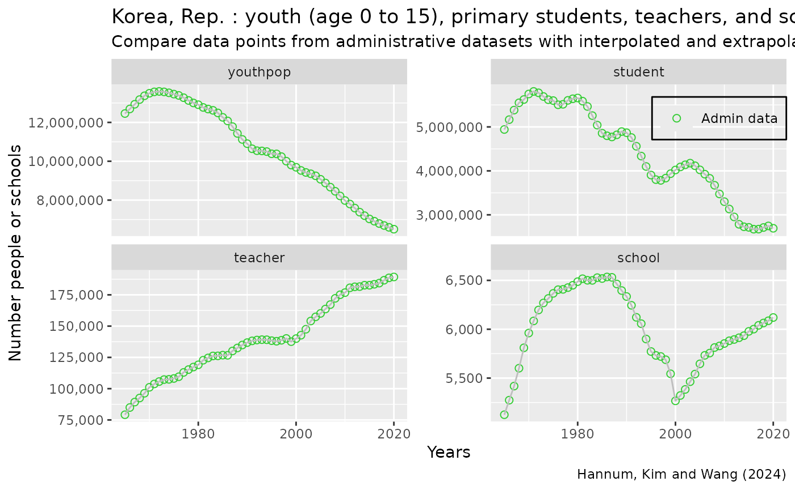
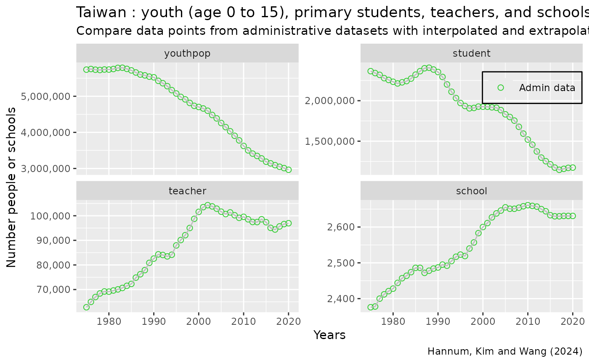
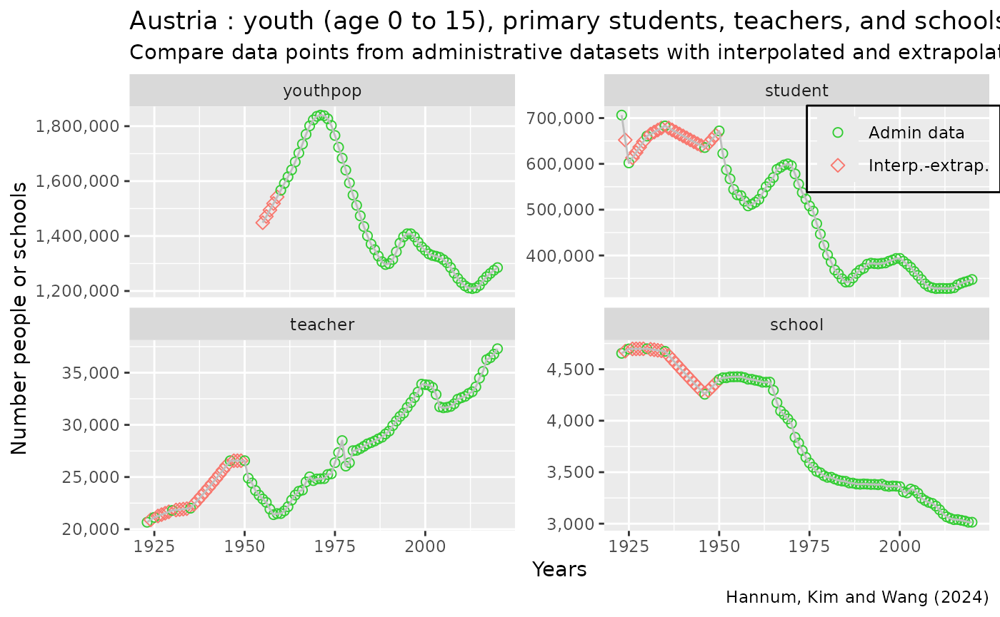
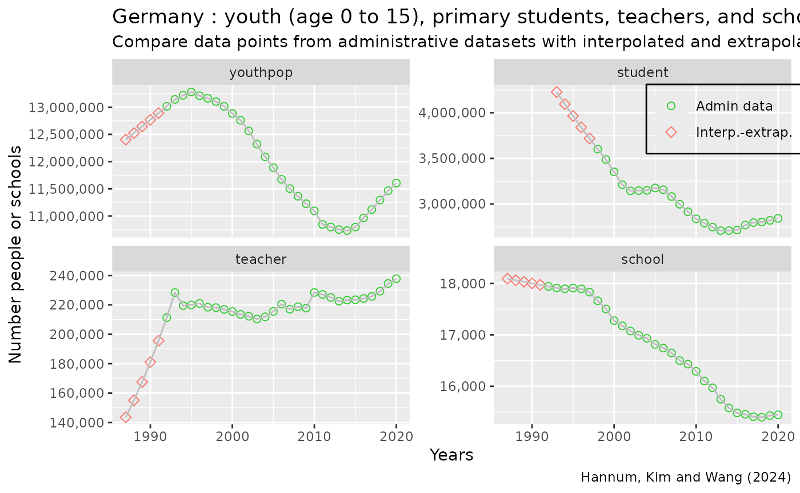
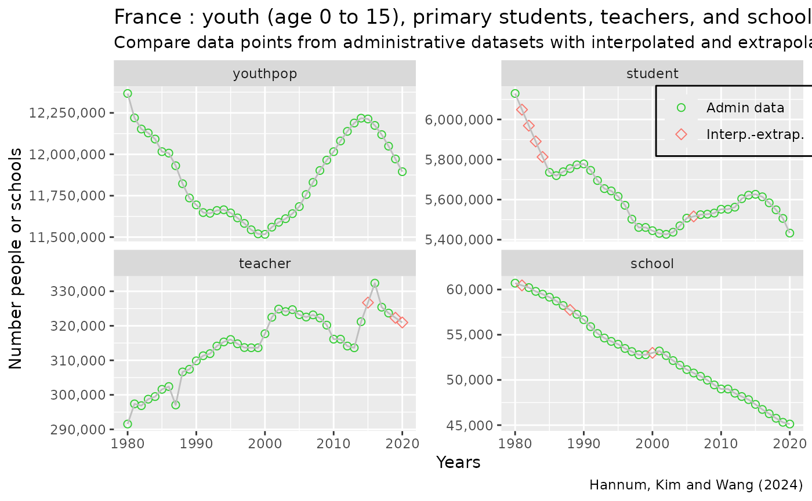
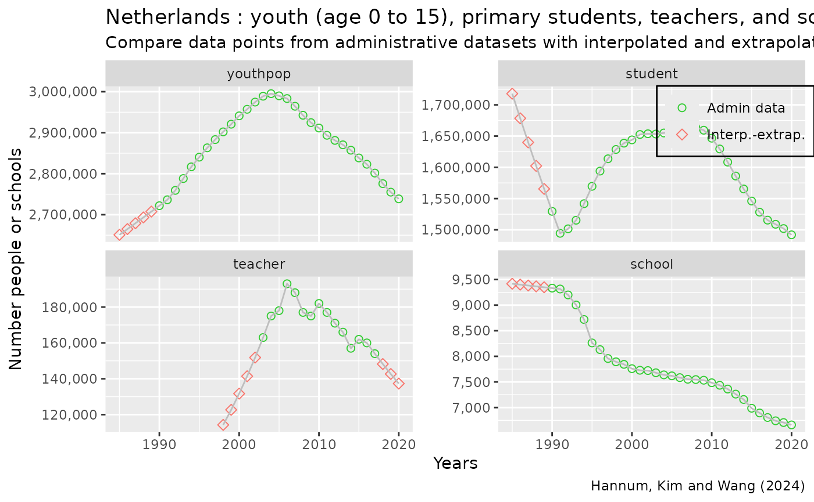
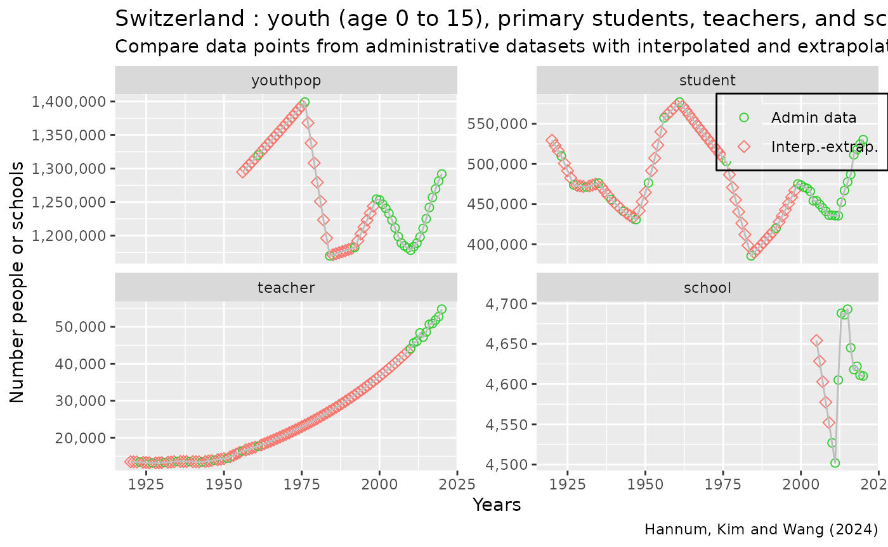

Compare Raw and Interpolated Global Panel
Source:vignettes/ffv_gen_percent_changes_summ.Rmd
ffv_gen_percent_changes_summ.Rmd
library(tibble)
library(dplyr)
#>
#> Attaching package: 'dplyr'
#> The following objects are masked from 'package:stats':
#>
#> filter, lag
#> The following objects are masked from 'package:base':
#>
#> intersect, setdiff, setequal, union
library(tidyr)
library(stringr)
library(readr)
library(ggplot2)
library(kableExtra)
#>
#> Attaching package: 'kableExtra'
#> The following object is masked from 'package:dplyr':
#>
#> group_rows
library(PrjCompPPTS)In this vignette, we show, for each country and in the output table below, the total number of yearly data points in our global primary panel dataset, observed between 1920 and 2020. We also show the share of these data points that is based on administrative data. The remaining data points are based on interpolating and extrapolating the administrative data.
See the output table show these stats in res-tab/country_interpolate.tex.
Then we visualize the years in which we interpolate and extrapolate as well as years in which we have admin data for the selected economies in Eastern Asia and Western Europe that we consider in the paper.
spt_path_res <- file.path("..", "res-tab", fsep = .Platform$file.sep)
spn_tex_out <- file.path(spt_path_res, "country_interpolate.tex", fsep = .Platform$file.sep)
bl_tex_save <- FALSE
verbose <- TRUELoad and select
Load in country code.
ppts_country_code <- PrjCompPPTS::ppts_country_code
ppts_country_code_sel <- ppts_country_code %>%
filter(!is.na(location_region_group)) %>%
arrange(
location_region_group_code,
location_name
)
print(
ppts_country_code_sel,
n = 300
)
#> # A tibble: 218 × 7
#> location_name location_code location_region_group location_income_group
#> <chr> <chr> <fct> <chr>
#> 1 Angola AGO Sub-Saharan Africa (… Lower middle income
#> 2 Benin BEN Sub-Saharan Africa (… Lower middle income
#> 3 Botswana BWA Sub-Saharan Africa (… Upper middle income
#> 4 Burkina Faso BFA Sub-Saharan Africa (… Low income
#> 5 Burundi BDI Sub-Saharan Africa (… Low income
#> 6 Cabo Verde CPV Sub-Saharan Africa (… Lower middle income
#> 7 Cameroon CMR Sub-Saharan Africa (… Lower middle income
#> 8 Central African R… CAF Sub-Saharan Africa (… Low income
#> 9 Chad TCD Sub-Saharan Africa (… Low income
#> 10 Comoros COM Sub-Saharan Africa (… Lower middle income
#> 11 Congo, Dem. Rep. COD Sub-Saharan Africa (… Low income
#> 12 Congo, Rep. COG Sub-Saharan Africa (… Lower middle income
#> 13 Côte d'Ivoire CIV Sub-Saharan Africa (… Lower middle income
#> 14 Equatorial Guinea GNQ Sub-Saharan Africa (… Upper middle income
#> 15 Eritrea ERI Sub-Saharan Africa (… Low income
#> 16 Eswatini SWZ Sub-Saharan Africa (… Lower middle income
#> 17 Ethiopia ETH Sub-Saharan Africa (… Low income
#> 18 Gabon GAB Sub-Saharan Africa (… Upper middle income
#> 19 Gambia GMB Sub-Saharan Africa (… Low income
#> 20 Ghana GHA Sub-Saharan Africa (… Lower middle income
#> 21 Guinea GIN Sub-Saharan Africa (… Lower middle income
#> 22 Guinea-Bissau GNB Sub-Saharan Africa (… Low income
#> 23 Kenya KEN Sub-Saharan Africa (… Lower middle income
#> 24 Lesotho LSO Sub-Saharan Africa (… Lower middle income
#> 25 Liberia LBR Sub-Saharan Africa (… Low income
#> 26 Madagascar MDG Sub-Saharan Africa (… Low income
#> 27 Malawi MWI Sub-Saharan Africa (… Low income
#> 28 Mali MLI Sub-Saharan Africa (… Low income
#> 29 Mauritania MRT Sub-Saharan Africa (… Lower middle income
#> 30 Mauritius MUS Sub-Saharan Africa (… Upper middle income
#> 31 Mozambique MOZ Sub-Saharan Africa (… Low income
#> 32 Namibia NAM Sub-Saharan Africa (… Upper middle income
#> 33 Niger NER Sub-Saharan Africa (… Low income
#> 34 Nigeria NGA Sub-Saharan Africa (… Lower middle income
#> 35 Rwanda RWA Sub-Saharan Africa (… Low income
#> 36 Senegal SEN Sub-Saharan Africa (… Lower middle income
#> 37 Seychelles SYC Sub-Saharan Africa (… High income
#> 38 Sierra Leone SLE Sub-Saharan Africa (… Low income
#> 39 Somalia SOM Sub-Saharan Africa (… Low income
#> 40 South Africa ZAF Sub-Saharan Africa (… Upper middle income
#> 41 South Sudan SSD Sub-Saharan Africa (… Low income
#> 42 Sudan SDN Sub-Saharan Africa (… Low income
#> 43 São Tomé and Prín… STP Sub-Saharan Africa (… Lower middle income
#> 44 Tanzania TZA Sub-Saharan Africa (… Lower middle income
#> 45 Togo TGO Sub-Saharan Africa (… Low income
#> 46 Uganda UGA Sub-Saharan Africa (… Low income
#> 47 Zambia ZMB Sub-Saharan Africa (… Lower middle income
#> 48 Zimbabwe ZWE Sub-Saharan Africa (… Lower middle income
#> 49 Algeria DZA Middle East & North … Lower middle income
#> 50 Bahrain BHR Middle East & North … High income
#> 51 Djibouti DJI Middle East & North … Lower middle income
#> 52 Egypt EGY Middle East & North … Lower middle income
#> 53 Iran IRN Middle East & North … Lower middle income
#> 54 Iraq IRQ Middle East & North … Upper middle income
#> 55 Israel ISR Middle East & North … High income
#> 56 Jordan JOR Middle East & North … Lower middle income
#> 57 Kuwait KWT Middle East & North … High income
#> 58 Lebanon LBN Middle East & North … Lower middle income
#> 59 Libya LBY Middle East & North … Upper middle income
#> 60 Malta MLT Middle East & North … High income
#> 61 Morocco MAR Middle East & North … Lower middle income
#> 62 Oman OMN Middle East & North … High income
#> 63 Qatar QAT Middle East & North … High income
#> 64 Saudi Arabia SAU Middle East & North … High income
#> 65 Syrian Arab Repub… SYR Middle East & North … Low income
#> 66 Tunisia TUN Middle East & North … Lower middle income
#> 67 United Arab Emira… ARE Middle East & North … High income
#> 68 West Bank and Gaza PSE Middle East & North … Upper middle income
#> 69 Yemen YEM Middle East & North … Low income
#> 70 Antigua and Barbu… ATG Latin America & Cari… High income
#> 71 Argentina ARG Latin America & Cari… Upper middle income
#> 72 Aruba ABW Latin America & Cari… High income
#> 73 Bahamas, The BHS Latin America & Cari… High income
#> 74 Barbados BRB Latin America & Cari… High income
#> 75 Belize BLZ Latin America & Cari… Upper middle income
#> 76 Bolivia BOL Latin America & Cari… Lower middle income
#> 77 Brazil BRA Latin America & Cari… Upper middle income
#> 78 British Virgin Is… VGB Latin America & Cari… High income
#> 79 Cayman Islands CYM Latin America & Cari… High income
#> 80 Chile CHL Latin America & Cari… High income
#> 81 Colombia COL Latin America & Cari… Upper middle income
#> 82 Costa Rica CRI Latin America & Cari… Upper middle income
#> 83 Cuba CUB Latin America & Cari… Upper middle income
#> 84 Curaçao CUW Latin America & Cari… High income
#> 85 Dominica DMA Latin America & Cari… Upper middle income
#> 86 Dominican Republic DOM Latin America & Cari… Upper middle income
#> 87 Ecuador ECU Latin America & Cari… Upper middle income
#> 88 El Salvador SLV Latin America & Cari… Upper middle income
#> 89 Grenada GRD Latin America & Cari… Upper middle income
#> 90 Guatemala GTM Latin America & Cari… Upper middle income
#> 91 Guyana GUY Latin America & Cari… High income
#> 92 Haiti HTI Latin America & Cari… Lower middle income
#> 93 Honduras HND Latin America & Cari… Lower middle income
#> 94 Jamaica JAM Latin America & Cari… Upper middle income
#> 95 Mexico MEX Latin America & Cari… Upper middle income
#> 96 Nicaragua NIC Latin America & Cari… Lower middle income
#> 97 Panama PAN Latin America & Cari… High income
#> 98 Paraguay PRY Latin America & Cari… Upper middle income
#> 99 Peru PER Latin America & Cari… Upper middle income
#> 100 Puerto Rico PRI Latin America & Cari… High income
#> 101 Sint Maarten (Dut… SXM Latin America & Cari… High income
#> 102 St. Kitts and Nev… KNA Latin America & Cari… High income
#> 103 St. Lucia LCA Latin America & Cari… Upper middle income
#> 104 St. Martin (Frenc… MAF Latin America & Cari… High income
#> 105 St. Vincent VCT Latin America & Cari… Upper middle income
#> 106 Suriname SUR Latin America & Cari… Upper middle income
#> 107 Trinidad and Toba… TTO Latin America & Cari… High income
#> 108 Turks and Caicos … TCA Latin America & Cari… High income
#> 109 Uruguay URY Latin America & Cari… High income
#> 110 Venezuela VEN Latin America & Cari… NA
#> 111 Virgin Islands (U… VIR Latin America & Cari… High income
#> 112 Bermuda BMU North America (NAC) High income
#> 113 Canada CAN North America (NAC) High income
#> 114 United States USA North America (NAC) High income
#> 115 Afghanistan AFG South Asia (SAS) Low income
#> 116 Bangladesh BGD South Asia (SAS) Lower middle income
#> 117 Bhutan BTN South Asia (SAS) Lower middle income
#> 118 India IND South Asia (SAS) Lower middle income
#> 119 Maldives MDV South Asia (SAS) Upper middle income
#> 120 Nepal NPL South Asia (SAS) Lower middle income
#> 121 Pakistan PAK South Asia (SAS) Lower middle income
#> 122 Sri Lanka LKA South Asia (SAS) Lower middle income
#> 123 Albania ALB Europe & Central Asi… Upper middle income
#> 124 Andorra AND Europe & Central Asi… High income
#> 125 Armenia ARM Europe & Central Asi… Upper middle income
#> 126 Austria AUT Europe & Central Asi… High income
#> 127 Azerbaijan AZE Europe & Central Asi… Upper middle income
#> 128 Belarus BLR Europe & Central Asi… Upper middle income
#> 129 Belgium BEL Europe & Central Asi… High income
#> 130 Bosnia and Herzeg… BIH Europe & Central Asi… Upper middle income
#> 131 Bulgaria BGR Europe & Central Asi… Upper middle income
#> 132 Channel Islands CHI Europe & Central Asi… High income
#> 133 Croatia HRV Europe & Central Asi… High income
#> 134 Cyprus CYP Europe & Central Asi… High income
#> 135 Czechia CZE Europe & Central Asi… High income
#> 136 Denmark DNK Europe & Central Asi… High income
#> 137 Estonia EST Europe & Central Asi… High income
#> 138 Faroe Islands FRO Europe & Central Asi… High income
#> 139 Finland FIN Europe & Central Asi… High income
#> 140 France FRA Europe & Central Asi… High income
#> 141 Georgia GEO Europe & Central Asi… Upper middle income
#> 142 Germany DEU Europe & Central Asi… High income
#> 143 Gibraltar GIB Europe & Central Asi… High income
#> 144 Greece GRC Europe & Central Asi… High income
#> 145 Greenland GRL Europe & Central Asi… High income
#> 146 Hungary HUN Europe & Central Asi… High income
#> 147 Iceland ISL Europe & Central Asi… High income
#> 148 Ireland IRL Europe & Central Asi… High income
#> 149 Isle of Man IMN Europe & Central Asi… High income
#> 150 Italy ITA Europe & Central Asi… High income
#> 151 Kazakhstan KAZ Europe & Central Asi… Upper middle income
#> 152 Kosovo XKX Europe & Central Asi… Upper middle income
#> 153 Kyrgyz Republic KGZ Europe & Central Asi… Lower middle income
#> 154 Latvia LVA Europe & Central Asi… High income
#> 155 Liechtenstein LIE Europe & Central Asi… High income
#> 156 Lithuania LTU Europe & Central Asi… High income
#> 157 Luxembourg LUX Europe & Central Asi… High income
#> 158 Moldova MDA Europe & Central Asi… Upper middle income
#> 159 Monaco MCO Europe & Central Asi… High income
#> 160 Montenegro MNE Europe & Central Asi… Upper middle income
#> 161 Netherlands NLD Europe & Central Asi… High income
#> 162 North Macedonia MKD Europe & Central Asi… Upper middle income
#> 163 Norway NOR Europe & Central Asi… High income
#> 164 Poland POL Europe & Central Asi… High income
#> 165 Portugal PRT Europe & Central Asi… High income
#> 166 Romania ROU Europe & Central Asi… High income
#> 167 Russian Federation RUS Europe & Central Asi… Upper middle income
#> 168 San Marino SMR Europe & Central Asi… High income
#> 169 Serbia SRB Europe & Central Asi… Upper middle income
#> 170 Slovak Republic SVK Europe & Central Asi… High income
#> 171 Slovenia SVN Europe & Central Asi… High income
#> 172 Spain ESP Europe & Central Asi… High income
#> 173 Sweden SWE Europe & Central Asi… High income
#> 174 Switzerland CHE Europe & Central Asi… High income
#> 175 Tajikistan TJK Europe & Central Asi… Lower middle income
#> 176 Turkmenistan TKM Europe & Central Asi… Upper middle income
#> 177 Türkiye TUR Europe & Central Asi… Upper middle income
#> 178 Ukraine UKR Europe & Central Asi… Lower middle income
#> 179 United Kingdom GBR Europe & Central Asi… High income
#> 180 Uzbekistan UZB Europe & Central Asi… Lower middle income
#> 181 American Samoa ASM East Asia & Pacific … High income
#> 182 Australia AUS East Asia & Pacific … High income
#> 183 Brunei Darussalam BRN East Asia & Pacific … High income
#> 184 Cambodia KHM East Asia & Pacific … Lower middle income
#> 185 China CHN East Asia & Pacific … Upper middle income
#> 186 Fiji FJI East Asia & Pacific … Upper middle income
#> 187 French Polynesia PYF East Asia & Pacific … High income
#> 188 Guam GUM East Asia & Pacific … High income
#> 189 Hong Kong SAR, Ch… HKG East Asia & Pacific … High income
#> 190 Indonesia IDN East Asia & Pacific … Upper middle income
#> 191 Japan JPN East Asia & Pacific … High income
#> 192 Kiribati KIR East Asia & Pacific … Lower middle income
#> 193 Korea, Dem. Peopl… PRK East Asia & Pacific … Low income
#> 194 Korea, Rep. KOR East Asia & Pacific … High income
#> 195 Lao PDR LAO East Asia & Pacific … Lower middle income
#> 196 Macao SAR, China MAC East Asia & Pacific … High income
#> 197 Malaysia MYS East Asia & Pacific … Upper middle income
#> 198 Marshall Islands MHL East Asia & Pacific … Upper middle income
#> 199 Micronesia FSM East Asia & Pacific … Lower middle income
#> 200 Mongolia MNG East Asia & Pacific … Lower middle income
#> 201 Myanmar MMR East Asia & Pacific … Lower middle income
#> 202 Nauru NRU East Asia & Pacific … High income
#> 203 New Caledonia NCL East Asia & Pacific … High income
#> 204 New Zealand NZL East Asia & Pacific … High income
#> 205 Northern Mariana … MNP East Asia & Pacific … High income
#> 206 Palau PLW East Asia & Pacific … Upper middle income
#> 207 Papua New Guinea PNG East Asia & Pacific … Lower middle income
#> 208 Philippines PHL East Asia & Pacific … Lower middle income
#> 209 Samoa WSM East Asia & Pacific … Lower middle income
#> 210 Singapore SGP East Asia & Pacific … High income
#> 211 Solomon Islands SLB East Asia & Pacific … Lower middle income
#> 212 Taiwan TWN East Asia & Pacific … High income
#> 213 Thailand THA East Asia & Pacific … Upper middle income
#> 214 Timor-Leste TLS East Asia & Pacific … Lower middle income
#> 215 Tonga TON East Asia & Pacific … Upper middle income
#> 216 Tuvalu TUV East Asia & Pacific … Upper middle income
#> 217 Vanuatu VUT East Asia & Pacific … Lower middle income
#> 218 Vietnam VNM East Asia & Pacific … Lower middle income
#> # ℹ 3 more variables: location_wblend_group <chr>,
#> # location_region_group_code <chr>, location_code_adj <chr>Load in the dataset generated by articles/ffv_gen_percent_changes.
ppts_easia_weuro_world_pchg <- PrjCompPPTS::ppts_easia_weuro_world_pchg
ppts_easia_weuro_world_pchg %>% distinct(year_bins_type)
#> # A tibble: 5 × 1
#> year_bins_type
#> <fct>
#> 1 1920t2020i05
#> 2 1920t2020i10
#> 3 1920t2020i20
#> 4 1925t2015i15
#> 5 1940t2020i01
ppts_easia_weuro_world_pchg %>% distinct(variable)
#> # A tibble: 5 × 1
#> variable
#> <fct>
#> 1 gdp
#> 2 student
#> 3 teacher
#> 4 youthpop
#> 5 school
ppts_pchg <- ppts_easia_weuro_world_pchg %>%
filter(
year_bins_type == "1940t2020i01",
variable %in% c("youthpop", "student", "teacher", "school")
) %>%
select(
location_code,
location_level,location_code, variable,
year_bins,
pchg, pchg_interp1, value, value_interp1
)Annual year variable as numeric and sort.
Compare interpolated and raw data by countries and decades
First, from data/ppts_easia_weuro_world_pchg.rda,
generate year groups. We generate three year groupings, one is based on
all years, one is based on each decade.
# Get all years
ar_year <- ppts_pchg %>%
distinct(year) %>% pull(year)
# Min and max years
fl_it_year_min <- min(ar_year)
fl_it_year_max <- max(ar_year)
# collect
ls_ar_years_cates <- vector(mode = "list", length = 3)
ls_st_years_cates_labels <- vector(mode = "list", length = 3)
# Year groups for summarizing, all years jointly
ar_it_year_cates <- c(1920, 2021)
ar_st_year_cates_labels <- c("1920 to 2020")
ls_ar_years_cates[[1]] <- ar_it_year_cates
ls_st_years_cates_labels[[1]] <- ar_st_year_cates_labels
# Year groups for summarizing, per two decade groupings
it_year_groups <- 6
ar_it_year_cates <- seq(1920, 2020, length.out=it_year_groups)
ar_it_year_cates[6] <- 2021
ar_st_year_cates_labels <- paste0(ar_it_year_cates[1:(it_year_groups-2)], " to ", ar_it_year_cates[2:(it_year_groups-1)] - 1)
ar_st_year_cates_labels <- c(ar_st_year_cates_labels, "2000 to 2020")
ls_ar_years_cates[[2]] <- ar_it_year_cates
ls_st_years_cates_labels[[2]] <- ar_st_year_cates_labels
# Year groups for summarizing, per decade groupings
it_year_groups <- 11
ar_it_year_cates <- seq(1920, 2020, length.out=it_year_groups)
ar_it_year_cates[11] <- 2021
ar_st_year_cates_labels <- paste0(ar_it_year_cates[1:(it_year_groups-2)], " to ", ar_it_year_cates[2:(it_year_groups-1)] - 1)
ar_st_year_cates_labels <- c(ar_st_year_cates_labels, "2010 to 2020")
ls_ar_years_cates[[3]] <- ar_it_year_cates
ls_st_years_cates_labels[[3]] <- ar_st_year_cates_labelsSecond, generate year groupings.
# year groups for summarizing
ppts_pchg_longer <- ppts_pchg %>%
mutate(
year_group_1 = base::cut(year,
breaks = ls_ar_years_cates[[1]],
labels = ls_st_years_cates_labels[[1]],
right = FALSE
),
year_group_2 = base::cut(year,
breaks = ls_ar_years_cates[[2]],
labels = ls_st_years_cates_labels[[2]],
right = FALSE
),
year_group_3 = base::cut(year,
breaks = ls_ar_years_cates[[3]],
labels = ls_st_years_cates_labels[[3]],
right = FALSE
)
) %>%
pivot_longer(cols = starts_with('year_group'),
names_to = c('year_group_set'),
names_pattern = paste0("year_group_(.*)"),
values_to = "year_group")Third, group by country, variable, decade and count data observations, do this for both interp or not.
# year groups for summarizing
ppts_pchg_grp <- ppts_pchg_longer %>%
group_by(
location_code, variable, year_group_set, year_group,
) %>%
summarize(
pchg_itp_cnt = sum(!is.na(value_interp1)),
pchg_raw_cnt = sum(!is.na(value)),
pchg_raw_shr = pchg_raw_cnt/pchg_itp_cnt,
)
#> `summarise()` has grouped output by 'location_code', 'variable',
#> 'year_group_set'. You can override using the `.groups` argument.
# ppts_pchg_grp %>% filter(location_code == "TWN", variable == "school", year_group_set == 1)
# print(ppts_pchg_longer %>% filter(location_code == "TWN", variable == "school", year_group_set == 1), n = 100)Fourth, reshape variables from long to wide for four key variables.
# year groups for summarizing
ppts_pchg_grp_wider <- ppts_pchg_grp %>%
pivot_wider(id_cols = c(
"location_code",
"year_group_set",
"year_group"
),
names_from = "variable",
names_prefix = "",
values_from = c(
pchg_itp_cnt, pchg_raw_shr
)) Fifth, use table-maker to generate a table, highlighting share of data from each country interpolated/extrapolated.
ppts_pchg_grp_tab <- ppts_pchg_grp_wider %>%
left_join(ppts_country_code_sel, by = "location_code") %>%
arrange(
location_region_group_code, location_name,
) %>%
filter(
!is.na(location_name)
) %>%
filter(
year_group_set == 1
) %>%
select(
location_region_group,
location_region_group_code,
location_code,
location_name,
year_group_set,
year_group,
pchg_itp_cnt_youthpop,
pchg_raw_shr_youthpop,
pchg_itp_cnt_student,
pchg_raw_shr_student,
pchg_itp_cnt_teacher,
pchg_raw_shr_teacher,
pchg_itp_cnt_school,
pchg_raw_shr_school
)Generate table and statistics
Sort and generate group counts.
# Sorted file
df_data_sorted <- ppts_pchg_grp_tab %>%
rename(
group_sorter_desc = location_region_group,
group_sorter = location_region_group_code,
country_name = location_name
) %>%
arrange(
group_sorter, location_code,
) %>%
group_by(group_sorter) %>%
ungroup()
# Count by group
df_group_counts <- df_data_sorted %>%
group_by(group_sorter_desc, group_sorter) %>%
summarize(group_count = n()) %>%
arrange(group_sorter) %>% ungroup() %>%
mutate(group_count_start = cumsum(group_count) - group_count + 1) %>%
mutate(group_count_end = cumsum(group_count)) %>%
select(group_count_start, group_count_end, everything())
#> `summarise()` has grouped output by 'group_sorter_desc'. You can override using
#> the `.groups` argument.
# display
kable(df_group_counts, caption="Group counter")| group_count_start | group_count_end | group_sorter_desc | group_sorter | group_count |
|---|---|---|---|---|
| 1 | 48 | Sub-Saharan Africa (SSF) | 1SSF | 48 |
| 49 | 69 | Middle East & North Africa (MEA) | 2MEA | 21 |
| 70 | 110 | Latin America & Caribbean (LCN) | 3LCN | 41 |
| 111 | 113 | North America (NAC) | 4NAC | 3 |
| 114 | 121 | South Asia (SAS) | 5SAS | 8 |
| 122 | 176 | Europe & Central Asia (ECS) | 6ECS | 55 |
| 177 | 213 | East Asia & Pacific (EAS) | 7EAS | 37 |
Format columns, decimals, percentage signs, etc.
# 4. Format columns, decimals, percentage signs, etc
df_data_formatted <- df_data_sorted %>%
arrange(group_sorter, country_name) %>%
select(
country_name,
pchg_itp_cnt_youthpop, pchg_raw_shr_youthpop,
pchg_itp_cnt_student, pchg_raw_shr_student,
pchg_itp_cnt_teacher, pchg_raw_shr_teacher,
pchg_itp_cnt_school, pchg_raw_shr_school
) %>%
mutate_at(
vars(contains("shr")),
list(~ paste0(
format(round(., 2) * 100,
nsmall = 0,
big.mark = ","
),
"%"
))
) %>%
mutate_at(
vars(contains("cnt")),
list(~ paste0(.))
)
df_data_formatted <- df_data_formatted %>%
mutate_at(vars(contains("shr")), ~ str_replace(., "NA%", "")) %>%
mutate_at(vars(contains("cnt")), ~ str_replace(., "NA", ""))Generate table. Also see res-tab/country_interpolate.tex.
ar_st_kableformat <- c("html", "latex")
ar_st_kableformat <- c("html")
for (st_kableformat in ar_st_kableformat) {
# Column names
ar_st_col_names <- c(
"Country name",
"Obs yrs",
"Perc. of yrs with admin data",
"Obs yrs",
"Perc. of yrs with admin data",
"Obs yrs",
"Perc. of yrs with admin data",
"Obs yrs",
"Perc. of yrs with admin data"
)
# Define column groups, grouping the names above
# =1/3/2 are number of columns group title covers
ar_st_col_groups1 <- c(
" " = 1,
"Youth population" = 2,
"Students" = 2,
"Teachers" = 2,
"Schools" = 2
)
# Second, we construct main table, and add styling.
st_title <- paste(
"Share of country-specific data generated through interpolation and extrapolation"
)
bk_tab_a <- kbl(
df_data_formatted,
format = st_kableformat,
label = "tab:lac:aod:temp:rank",
# escape = F,
linesep = "",
booktabs = T,
longtable = T,
align = "c",
caption = st_title,
col.names = ar_st_col_names
) %>%
# see https://cran.r-project.org/web/packages/kableExtra/vignettes/awesome_table_in_html.html#Bootstrap_table_classes
kable_styling(
bootstrap_options = c("striped", "hover", "condensed", "responsive"),
full_width = F, position = "left"
)
# Third, we add in column groups.
bk_tab_a <- bk_tab_a %>%
add_header_above(ar_st_col_groups1)
# Fourth, we add in row groups.
for (it_group in seq(1, dim(df_group_counts)[1])) {
# Reion full name info
st_loc <- as.character(df_group_counts[[it_group, "group_sorter_desc"]])
# groups start and end
it_group_count_start <- df_group_counts[[it_group, "group_count_start"]]
it_group_count_end <- df_group_counts[[it_group, "group_count_end"]]
# display text
st_panel_letter <- base::LETTERS[it_group]
# Heading group row, year
st_panel_text <- paste0(
"Panel ", st_panel_letter, ": ", st_loc
)
# Add to table
bk_tab_a <- bk_tab_a %>%
pack_rows(
st_panel_text, it_group_count_start, it_group_count_end,
latex_gap_space = "0.25em",
latex_align = "c",
hline_after = TRUE
)
}
# Fifth, column formatting.
fl_width_country <- 6
st_width_country <- paste0(fl_width_country, "cm")
bk_tab_a <- bk_tab_a %>%
column_spec(1, width = st_width_country) %>%
column_spec(2:dim(df_data_formatted)[2], width = "3cm")
# Final adjustments
# Headings on all pages, note use `sub` to replace first midrule
st_headend <- paste0(
"\\midrule\\endhead\n",
"\\addlinespace[0.2em]\\hline\\addlinespace[0.2em]\n",
"\\multicolumn{", dim(df_data_formatted)[2], "}{r}{\\emph{Continued on next page}}\\\\\n",
"\\endfoot\\endlastfoot"
)
bk_tab_a <- sub(bk_tab_a,
pattern = "\\midrule", replacement = st_headend,
fixed = TRUE
)
# country-names left-align
bk_tab_a <- gsub(bk_tab_a,
pattern = paste0("\\centering\\arraybackslash}p{", st_width_country, "}"),
replacement = paste0("\\raggedright\\arraybackslash}p{", st_width_country, "}"),
fixed = TRUE
)
bk_tab_a <- gsub(bk_tab_a,
pattern = paste0("\\$\\textasciicircum{}\\{\\textbackslash{}circ\\}C\\$"),
replacement = paste0("$^{\\circ}C$"),
fixed = TRUE
)
bk_tab_a <- gsub(bk_tab_a,
pattern = paste0("\\$\\textbackslash{}ge\\$"),
replacement = paste0("$\\ge$"),
fixed = TRUE
)
st_text <- ""
bk_tab_a <- gsub(bk_tab_a,
pattern = paste0("\\textbackslash{}", st_text, "\\"),
replacement = paste0("\\", st_text),
fixed = TRUE
)
# midrule replacing hline
bk_tab_a <- gsub(bk_tab_a,
pattern = "hline",
replacement = "midrule", fixed = TRUE
)
# 6. Finally, save table content to file
if (st_kableformat == "latex") {
if (bl_tex_save) {
fileConn <- file(spn_tex_out)
writeLines(bk_tab_a, fileConn)
close(fileConn)
if (verbose) {
print(glue::glue("F-815346, S3"))
print(glue::glue("Latex saved: {spn_tex_out}"))
}
}
} else if (st_kableformat == "html") {
bk_tab_a_html <- bk_tab_a
}
}
#> Warning in pack_rows(., st_panel_text, it_group_count_start, it_group_count_end, : latex_align parameter is not used in HTML Mode,
#> use label_row_css instead.
#> Warning in pack_rows(., st_panel_text, it_group_count_start, it_group_count_end, : latex_align parameter is not used in HTML Mode,
#> use label_row_css instead.
#> Warning in pack_rows(., st_panel_text, it_group_count_start, it_group_count_end, : latex_align parameter is not used in HTML Mode,
#> use label_row_css instead.
#> Warning in pack_rows(., st_panel_text, it_group_count_start, it_group_count_end, : latex_align parameter is not used in HTML Mode,
#> use label_row_css instead.
#> Warning in pack_rows(., st_panel_text, it_group_count_start, it_group_count_end, : latex_align parameter is not used in HTML Mode,
#> use label_row_css instead.
#> Warning in pack_rows(., st_panel_text, it_group_count_start, it_group_count_end, : latex_align parameter is not used in HTML Mode,
#> use label_row_css instead.
#> Warning in pack_rows(., st_panel_text, it_group_count_start, it_group_count_end, : latex_align parameter is not used in HTML Mode,
#> use label_row_css instead.
bk_tab_a_html| Country name | Obs yrs | Perc. of yrs with admin data | Obs yrs | Perc. of yrs with admin data | Obs yrs | Perc. of yrs with admin data | Obs yrs | Perc. of yrs with admin data |
|---|---|---|---|---|---|---|---|---|
| Panel A: Sub-Saharan Africa (SSF) | ||||||||
| Angola | 61 | 100% | 55 | 44% | 55 | 36% | ||
| Benin | 61 | 100% | 55 | 89% | 55 | 89% | ||
| Botswana | 61 | 100% | 56 | 79% | 56 | 77% | ||
| Burkina Faso | 61 | 100% | 55 | 89% | 55 | 89% | ||
| Burundi | 61 | 100% | 55 | 87% | 55 | 82% | ||
| Cabo Verde | 61 | 100% | 55 | 80% | 55 | 73% | ||
| Cameroon | 61 | 100% | 55 | 85% | 55 | 80% | ||
| Central African Republic | 61 | 100% | 55 | 64% | 55 | 49% | ||
| Chad | 61 | 100% | 55 | 76% | 55 | 62% | ||
| Comoros | 61 | 100% | 55 | 64% | 55 | 53% | ||
| Congo, Dem. Rep. | 61 | 100% | 55 | 67% | 55 | 40% | ||
| Congo, Rep. | 61 | 100% | 55 | 78% | 55 | 75% | ||
| Côte d’Ivoire | 61 | 100% | 56 | 86% | 56 | 84% | ||
| Equatorial Guinea | 61 | 100% | 55 | 36% | 52 | 31% | ||
| Eritrea | 57 | 91% | 37 | 76% | 37 | 78% | ||
| Eswatini | 61 | 100% | 56 | 88% | 56 | 88% | ||
| Ethiopia | 61 | 100% | 55 | 82% | 55 | 62% | ||
| Gabon | 61 | 100% | 51 | 57% | 51 | 55% | ||
| Gambia | 61 | 100% | 55 | 91% | 55 | 84% | ||
| Ghana | 61 | 100% | 55 | 87% | 52 | 88% | ||
| Guinea | 61 | 100% | 55 | 84% | 55 | 85% | ||
| Guinea-Bissau | 61 | 100% | 50 | 60% | 50 | 30% | ||
| Kenya | 61 | 100% | 56 | 75% | 28 | 54% | ||
| Lesotho | 61 | 100% | 56 | 86% | 56 | 84% | ||
| Liberia | 61 | 100% | 56 | 36% | 28 | 39% | ||
| Madagascar | 61 | 100% | 55 | 82% | 55 | 84% | ||
| Malawi | 61 | 100% | 55 | 85% | 27 | 44% | ||
| Mali | 61 | 100% | 55 | 87% | 55 | 85% | ||
| Mauritania | 61 | 100% | 55 | 89% | 55 | 85% | ||
| Mauritius | 61 | 100% | 56 | 89% | 56 | 89% | ||
| Mozambique | 61 | 100% | 55 | 80% | 55 | 78% | ||
| Namibia | 61 | 100% | 40 | 72% | 34 | 53% | ||
| Niger | 61 | 100% | 55 | 87% | 55 | 85% | ||
| Nigeria | 61 | 100% | 56 | 77% | 56 | 64% | ||
| Rwanda | 61 | 100% | 55 | 82% | 55 | 82% | ||
| Senegal | 61 | 100% | 55 | 85% | 55 | 85% | ||
| Seychelles | 61 | 100% | 56 | 89% | 56 | 66% | ||
| Sierra Leone | 61 | 100% | 55 | 55% | 55 | 49% | ||
| Somalia | 61 | 100% | 47 | 34% | 47 | 21% | ||
| South Africa | 61 | 100% | 56 | 68% | 49 | 49% | ||
| South Sudan | 61 | 100% | 15 | 13% | 15 | 13% | ||
| Sudan | 61 | 100% | 25 | 72% | ||||
| São Tomé and Príncipe | 61 | 100% | 55 | 67% | 55 | 47% | ||
| Tanzania | 61 | 100% | 56 | 91% | 56 | 84% | ||
| Togo | 61 | 100% | 55 | 89% | 55 | 89% | ||
| Uganda | 61 | 100% | 56 | 84% | 56 | 86% | ||
| Zambia | 61 | 100% | 56 | 79% | 56 | 73% | ||
| Zimbabwe | 61 | 100% | 56 | 73% | 53 | 72% | ||
| Panel B: Middle East & North Africa (MEA) | ||||||||
| Algeria | 61 | 100% | 55 | 91% | 55 | 84% | ||
| Bahrain | 61 | 100% | 55 | 82% | 53 | 62% | ||
| Djibouti | 61 | 100% | 55 | 89% | 55 | 73% | ||
| Egypt | 61 | 100% | 55 | 84% | 55 | 65% | ||
| Iran | 61 | 100% | 55 | 85% | 55 | 73% | ||
| Iraq | 61 | 100% | 47 | 60% | 47 | 60% | ||
| Israel | 61 | 100% | 53 | 85% | 51 | 76% | ||
| Jordan | 61 | 100% | 55 | 84% | 55 | 55% | ||
| Kuwait | 61 | 95% | 55 | 91% | 55 | 91% | ||
| Lebanon | 61 | 100% | 55 | 71% | 45 | 49% | ||
| Libya | 61 | 100% | 46 | 43% | 23 | 52% | ||
| Malta | 61 | 100% | 55 | 89% | 55 | 80% | ||
| Morocco | 61 | 100% | 55 | 91% | 55 | 84% | ||
| Oman | 61 | 100% | 55 | 87% | 55 | 65% | ||
| Qatar | 61 | 100% | 55 | 91% | 55 | 85% | ||
| Saudi Arabia | 61 | 100% | 47 | 34% | 47 | 34% | ||
| Syrian Arab Republic | 61 | 100% | 53 | 81% | 42 | 76% | ||
| Tunisia | 61 | 100% | 55 | 89% | 55 | 85% | ||
| United Arab Emirates | 61 | 100% | 55 | 87% | 55 | 85% | ||
| West Bank and Gaza | 36 | 86% | 31 | 81% | 27 | 81% | ||
| Yemen | 61 | 100% | 27 | 44% | 27 | 19% | ||
| Panel C: Latin America & Caribbean (LCN) | ||||||||
| Antigua and Barbuda | 61 | 100% | 55 | 40% | 54 | 33% | ||
| Argentina | 61 | 100% | 56 | 80% | 49 | 61% | ||
| Aruba | 61 | 100% | 26 | 62% | 24 | 58% | ||
| Bahamas, The | 61 | 100% | 55 | 75% | 55 | 55% | ||
| Barbados | 61 | 100% | 55 | 69% | 48 | 56% | ||
| Belize | 61 | 100% | 55 | 85% | 27 | 78% | ||
| Bolivia | 61 | 100% | 56 | 84% | 27 | 26% | ||
| Brazil | 61 | 100% | 56 | 80% | 56 | 38% | ||
| British Virgin Islands | 55 | 69% | 55 | 60% | ||||
| Cayman Islands | 54 | 44% | 49 | 33% | ||||
| Chile | 61 | 100% | 56 | 82% | 28 | 75% | ||
| Colombia | 61 | 100% | 56 | 86% | 56 | 84% | ||
| Costa Rica | 61 | 100% | 56 | 89% | 56 | 84% | ||
| Cuba | 61 | 100% | 55 | 91% | 55 | 89% | ||
| Curaçao | 61 | 100% | 13 | 15% | ||||
| Dominica | 55 | 76% | 53 | 49% | ||||
| Dominican Republic | 61 | 100% | 55 | 82% | 55 | 53% | ||
| Ecuador | 61 | 100% | 55 | 91% | 55 | 89% | ||
| El Salvador | 61 | 100% | 56 | 82% | 23 | 52% | ||
| Grenada | 61 | 100% | 55 | 80% | 55 | 71% | ||
| Guatemala | 61 | 100% | 56 | 88% | 56 | 82% | ||
| Guyana | 61 | 100% | 52 | 69% | 52 | 58% | ||
| Haiti | 61 | 100% | 38 | 63% | 38 | 63% | ||
| Honduras | 61 | 100% | 56 | 82% | 56 | 66% | ||
| Jamaica | 61 | 100% | 55 | 78% | 55 | 49% | ||
| Mexico | 61 | 100% | 55 | 89% | 55 | 84% | ||
| Nicaragua | 61 | 100% | 51 | 76% | 51 | 76% | ||
| Panama | 61 | 100% | 56 | 84% | 56 | 70% | ||
| Paraguay | 61 | 100% | 56 | 80% | 53 | 58% | ||
| Peru | 61 | 100% | 56 | 91% | 56 | 91% | ||
| Puerto Rico | 61 | 100% | 55 | 31% | 51 | 24% | ||
| Sint Maarten (Dutch part) | 13 | 15% | 1 | 100% | ||||
| St. Kitts and Nevis | 50 | 72% | 46 | 63% | ||||
| St. Lucia | 61 | 100% | 55 | 91% | 54 | 91% | ||
| St. Vincent | 61 | 100% | 55 | 56% | 54 | 44% | ||
| Suriname | 61 | 100% | 55 | 76% | 55 | 73% | ||
| Trinidad and Tobago | 61 | 100% | 50 | 78% | 49 | 71% | ||
| Turks and Caicos Islands | 55 | 38% | 55 | 24% | ||||
| Uruguay | 61 | 100% | 56 | 89% | 56 | 84% | ||
| Venezuela | 61 | 100% | 55 | 80% | 27 | 63% | ||
| Virgin Islands (U.S.) | 61 | 100% | 33 | 52% | 33 | 27% | ||
| Panel D: North America (NAC) | ||||||||
| Bermuda | 55 | 53% | 55 | 53% | ||||
| Canada | 61 | 100% | 55 | 82% | 28 | 61% | ||
| United States | 61 | 100% | 12 | 50% | 42 | 29% | ||
| Panel E: South Asia (SAS) | ||||||||
| Afghanistan | 61 | 100% | 56 | 79% | 56 | 46% | ||
| Bangladesh | 61 | 100% | 56 | 54% | 56 | 55% | ||
| Bhutan | 61 | 100% | 56 | 82% | 56 | 59% | ||
| India | 61 | 100% | 55 | 84% | 55 | 35% | ||
| Maldives | 61 | 100% | 46 | 67% | 28 | 79% | ||
| Nepal | 61 | 100% | 56 | 84% | 56 | 84% | ||
| Pakistan | 61 | 100% | 55 | 73% | 55 | 73% | ||
| Sri Lanka | 61 | 100% | 56 | 84% | 50 | 54% | ||
| Panel F: Europe & Central Asia (ECS) | ||||||||
| Albania | 61 | 100% | 50 | 88% | 29 | 59% | ||
| Andorra | 51 | 41% | 51 | 41% | ||||
| Armenia | 61 | 100% | 35 | 86% | 35 | 46% | ||
| Austria | 66 | 92% | 98 | 78% | 98 | 78% | 98 | 78% |
| Azerbaijan | 61 | 100% | 45 | 76% | 35 | 86% | ||
| Belarus | 61 | 100% | 55 | 87% | 34 | 74% | ||
| Belgium | 61 | 100% | 55 | 85% | 55 | 49% | ||
| Bosnia and Herzegovina | 61 | 100% | 19 | 74% | 13 | 62% | ||
| Bulgaria | 61 | 100% | 55 | 89% | 30 | 77% | ||
| Channel Islands | 61 | 100% | ||||||
| Croatia | 61 | 100% | 33 | 79% | 30 | 73% | ||
| Cyprus | 61 | 100% | 55 | 87% | 55 | 87% | ||
| Czechia | 61 | 100% | 55 | 87% | 53 | 77% | ||
| Denmark | 61 | 100% | 55 | 85% | 41 | 41% | ||
| Estonia | 61 | 100% | 45 | 87% | 32 | 50% | ||
| Faroe Islands | 1 | 100% | ||||||
| Finland | 61 | 100% | 55 | 89% | 55 | 67% | ||
| France | 41 | 100% | 41 | 88% | 41 | 93% | 41 | 93% |
| Georgia | 61 | 100% | 45 | 71% | 45 | 56% | ||
| Germany | 34 | 85% | 28 | 82% | 34 | 85% | 34 | 85% |
| Gibraltar | 55 | 45% | 54 | 43% | ||||
| Greece | 61 | 100% | 55 | 85% | 55 | 82% | ||
| Hungary | 61 | 100% | 55 | 89% | 32 | 72% | ||
| Iceland | 61 | 100% | 55 | 89% | 55 | 24% | ||
| Ireland | 61 | 100% | 55 | 89% | 48 | 77% | ||
| Italy | 61 | 100% | 55 | 89% | 55 | 78% | ||
| Kazakhstan | 61 | 100% | 45 | 76% | 40 | 78% | ||
| Kyrgyz Republic | 61 | 100% | 45 | 76% | 45 | 58% | ||
| Latvia | 61 | 100% | 45 | 87% | 45 | 87% | ||
| Liechtenstein | 23 | 70% | 23 | 74% | ||||
| Lithuania | 61 | 100% | 45 | 73% | 45 | 73% | ||
| Luxembourg | 61 | 100% | 56 | 79% | 56 | 66% | ||
| Moldova | 61 | 100% | 45 | 73% | 45 | 73% | ||
| Monaco | 55 | 51% | 54 | 20% | ||||
| Montenegro | 61 | 100% | 23 | 70% | ||||
| Netherlands | 36 | 86% | 36 | 86% | 23 | 65% | 36 | 86% |
| North Macedonia | 61 | 100% | 33 | 73% | 28 | 75% | ||
| Norway | 61 | 100% | 55 | 89% | 55 | 18% | ||
| Poland | 61 | 100% | 55 | 85% | 25 | 68% | ||
| Portugal | 61 | 100% | 55 | 85% | 53 | 75% | ||
| Romania | 61 | 100% | 55 | 67% | 45 | 76% | ||
| Russian Federation | 61 | 100% | 55 | 85% | 45 | 56% | ||
| San Marino | 55 | 65% | 55 | 65% | ||||
| Serbia | 61 | 100% | 27 | 81% | 19 | 74% | ||
| Slovak Republic | 61 | 100% | 35 | 83% | 33 | 76% | ||
| Slovenia | 61 | 100% | 45 | 87% | 33 | 67% | ||
| Spain | 61 | 100% | 55 | 89% | 55 | 67% | ||
| Sweden | 61 | 100% | 55 | 89% | 55 | 60% | ||
| Switzerland | 65 | 40% | 101 | 35% | 101 | 21% | 16 | 69% |
| Tajikistan | 61 | 100% | 35 | 77% | 35 | 77% | ||
| Turkmenistan | 61 | 100% | 7 | 29% | 7 | 29% | ||
| Türkiye | 61 | 100% | 55 | 84% | 55 | 56% | ||
| Ukraine | 61 | 100% | 55 | 82% | 35 | 74% | ||
| United Kingdom | 61 | 100% | 55 | 80% | 55 | 73% | ||
| Uzbekistan | 61 | 100% | 45 | 76% | 45 | 76% | ||
| Panel G: East Asia & Pacific (EAS) | ||||||||
| American Samoa | 32 | 59% | 32 | 47% | ||||
| Australia | 61 | 100% | 55 | 89% | 39 | 59% | ||
| Brunei Darussalam | 61 | 100% | 56 | 89% | 56 | 84% | ||
| Cambodia | 61 | 100% | 55 | 73% | 55 | 71% | ||
| China | 66 | 92% | 72 | 100% | 72 | 100% | 72 | 100% |
| Fiji | 61 | 100% | 56 | 71% | 45 | 36% | ||
| French Polynesia | 61 | 100% | 36 | 67% | 36 | 61% | ||
| Guam | 61 | 100% | 29 | 62% | 29 | 55% | ||
| Hong Kong SAR, China | 61 | 100% | 55 | 89% | 55 | 85% | ||
| Indonesia | 61 | 100% | 56 | 84% | 56 | 84% | ||
| Japan | 66 | 92% | 73 | 100% | 73 | 100% | 73 | 100% |
| Kiribati | 61 | 100% | 55 | 78% | 54 | 74% | ||
| Korea, Dem. People’s Rep. | 61 | 100% | 17 | 12% | 17 | 12% | ||
| Korea, Rep. | 56 | 100% | 56 | 100% | 56 | 100% | 56 | 100% |
| Lao PDR | 61 | 100% | 55 | 84% | 55 | 84% | ||
| Macao SAR, China | 61 | 100% | 55 | 65% | 55 | 55% | ||
| Malaysia | 61 | 100% | 56 | 77% | 56 | 77% | ||
| Marshall Islands | 27 | 52% | 14 | 14% | ||||
| Micronesia | 61 | 100% | 55 | 31% | 55 | 9% | ||
| Mongolia | 61 | 100% | 55 | 87% | 55 | 73% | ||
| Myanmar | 61 | 100% | 55 | 76% | 55 | 73% | ||
| Nauru | 55 | 36% | 55 | 29% | ||||
| New Caledonia | 61 | 100% | 35 | 71% | 32 | 66% | ||
| New Zealand | 61 | 100% | 56 | 89% | 55 | 75% | ||
| Palau | 27 | 37% | 12 | 17% | ||||
| Papua New Guinea | 61 | 100% | 56 | 68% | 56 | 45% | ||
| Philippines | 61 | 100% | 55 | 82% | 55 | 80% | ||
| Samoa | 61 | 100% | 56 | 70% | 51 | 45% | ||
| Singapore | 61 | 100% | 56 | 61% | 56 | 61% | ||
| Solomon Islands | 61 | 100% | 56 | 75% | 56 | 61% | ||
| Taiwan | 46 | 100% | 46 | 100% | 46 | 100% | 46 | 100% |
| Thailand | 61 | 100% | 55 | 89% | 55 | 64% | ||
| Timor-Leste | 61 | 100% | 25 | 68% | 25 | 40% | ||
| Tonga | 61 | 100% | 56 | 84% | 56 | 82% | ||
| Tuvalu | 42 | 50% | 32 | 34% | ||||
| Vanuatu | 61 | 100% | 56 | 73% | 56 | 46% | ||
| Vietnam | 61 | 100% | 50 | 88% | 50 | 84% | ||
Selected country results
We will have two variables, the variable with the interpolated results along with original raw data, as well as a variable with just the points where interpolation took place. And we will visualize by presenting the full results as a solid line, and the places where interpolation and extrapolation took place as dots.
ppts_pchg <- ppts_pchg %>%
select(
location_code,
variable, year,
value, value_interp1
) %>%
mutate(
value_interponly = case_when(
is.na(value) & !is.na(value_interp1) ~ value_interp1,
TRUE ~ NA
)
)Interpolated and raw data in the same variable for easier graphing.
ppts_pchg_longer <- ppts_pchg %>%
select(
location_code,
variable, year,
value, value_interp1, value_interponly
) %>%
rename(
value_0raw = value,
value_1interp1 = value_interp1,
value_2interpoly = value_interponly
) %>%
pivot_longer(cols = starts_with('value'),
names_to = c('value_type'),
names_pattern = paste0("value_(.*)"),
values_to = "value") %>%
drop_na(value)
print(
ppts_pchg_longer %>% group_by(value_type) %>% tally()
)
#> # A tibble: 3 × 2
#> value_type n
#> <chr> <int>
#> 1 0raw 37430
#> 2 1interp1 44052
#> 3 2interpoly 6622Graph-generating script
Build a graph generating function to show all data points and interpolated points.
ffi_select_country_show_interpolate <- function(
st_country_name = "France"
) {
# Select
st_location_code <- ppts_country_code_sel %>%
filter(location_name == st_country_name) %>%
pull(location_code)
ppts_pchg_longer_country <- ppts_pchg_longer %>%
filter(location_code == st_location_code)
ppts_pchg_country <- ppts_pchg %>%
filter(location_code == st_location_code)
# Visualize.
# Color controls
ar_st_colors <- c("#33cc33", "#F8766D")
ar_st_labels <- c("Admin data", "Interp.-extrap.")
# Shape controls
ar_it_shapes <- c(1, 5)
pl_lines_pri <- ggplot() +
geom_point(
data = ppts_pchg_longer_country %>% filter(value_type != "1interp1"),
aes(
x=year, y=value,
color=value_type, shape=value_type,
), size = 2) +
geom_line(
data= ppts_pchg_longer_country %>% filter(value_type == "1interp1"),
aes(
x=year, y=value
), linewidth = 0.5, color="gray") +
facet_wrap( ~
factor(variable, c("youthpop", "student", "teacher", "school")),
scales = "free_y"
) +
labs(x = paste0("Years"),
y = paste0("Number people or schools"),
title = paste(
st_country_name,
": youth (age 0 to 15), primary students, teachers, and schools",
sep=" "),
subtitle = paste(
"Compare data points from administrative datasets",
"with interpolated and extrapolated data", sep=" "),
caption = paste(
"Hannum, Kim and Wang (2024)", sep="")) +
scale_color_manual(values = ar_st_colors, labels=ar_st_labels) +
scale_shape_manual(values = ar_it_shapes, labels=ar_st_labels) +
scale_y_continuous(labels = scales::comma_format(big.mark = ',')) +
theme(
text = element_text(size = 11),
legend.title = element_blank(),
legend.position = c(0.90, 0.90),
legend.key.width = unit(1.5, "line"),
legend.background =
element_rect(fill = "transparent", colour = "black", linetype='solid')
)
return(pl_lines_pri)
}Administrative data and interpolation in East Asia
ar_st_country_name <- c(
"China", "Japan", "Korea, Rep.", "Taiwan"
)
for (st_country_name in ar_st_country_name) {
pl_country <- ffi_select_country_show_interpolate(st_country_name = st_country_name)
print(pl_country)
}
#> Warning: A numeric `legend.position` argument in `theme()` was deprecated in ggplot2
#> 3.5.0.
#> ℹ Please use the `legend.position.inside` argument of `theme()` instead.
#> This warning is displayed once every 8 hours.
#> Call `lifecycle::last_lifecycle_warnings()` to see where this warning was
#> generated.
Administrative data and interpolation in Western Europe
ar_st_country_name <- c(
"Austria", "Germany", "France", "Netherlands", "Switzerland"
)
for (st_country_name in ar_st_country_name) {
pl_country <- ffi_select_country_show_interpolate(st_country_name = st_country_name)
print(pl_country)
}